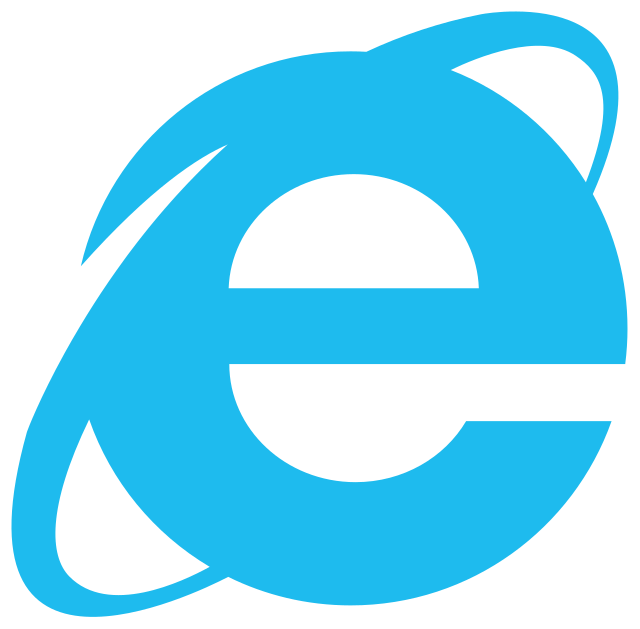
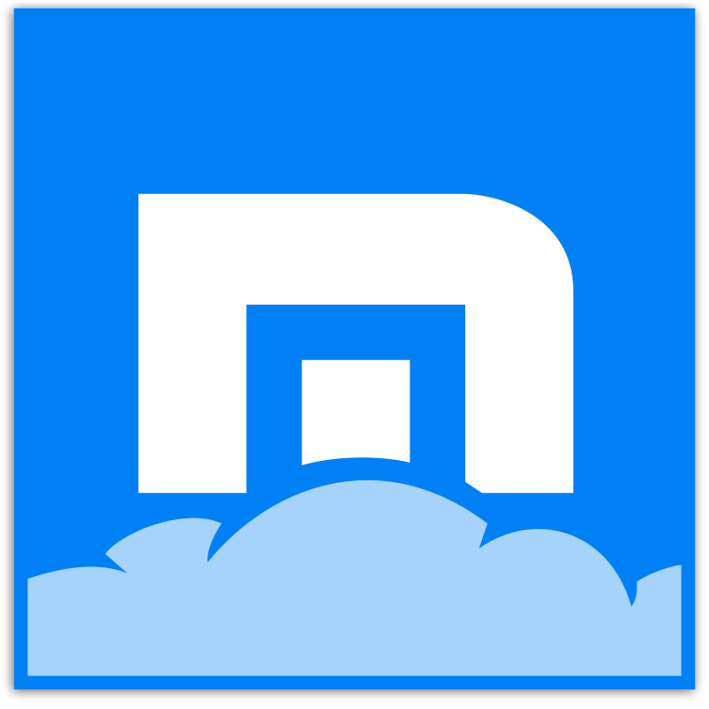
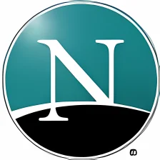

| NAVEGADOR |
CARACTERISTICAS |
VENTAJAS |
DESVENTAJAS |
1.Google chrome  |
Permite la instalacion de miles de extensiones,
que permite una mayor personalizacion del navegador. |
Interaccion de la barra de estado con el mouse,busca
y navega en internet desde una sola barra tiene una administracion
del procesador. |
Ocupa gran cantidad de memoria,no tienen marcador dinamico.
tarda en cambiar los programas. |
2.Mozilla firefox  |
Tiene corrector ortografico y el navegador es privado. |
Soporta para bajar fuentes,posibilidad de restaurar la sesion. |
Es poco intuitivo,repetitivo el error de las paginas. |
| 3.Internet explorer  |
Navegador, es un complemento indispensable,era el lider de internet |
Comunicacion sencilla,navegacion privada, un buen nivel de seguridad |
Insegura e inestable,lenta,es la principal fuente de pirateria. |
4.Safari  |
Es el complemento de usuarios,es inestable en sistemas. |
Navegador accesible,carga rapidamente, es simple y eficaz. |
Tiene poca cuota de mercado,no hay aplicaciones,no todos los
sitios webs estan optimizados. |
| 5.Maxthon  |
Vista dividida,paginas de internet ordenadas,
multiples paginas. |
Se puede editar y personalizar, es facil utilizar,
se puede bloquear sitios webs y anuncios. |
Que no tenga skins |
| 6.Netscape Navigator  |
Velocidad y contabilidad |
Va siempre delante de las innovaciones, es gratis,
es facil de cortar la comunicacion. |
No es mejor que internet explore, no ofrece un buen
soporte para los archivos, no es de windows. |
7.Opera  |
Opera es usualmente catalogado como el ferrari de los navegadores
de internet,uno de los mas seguros, estables y rapidos del mercado,
extrañamete usado por una minima cantidad de personas en comparacion con
los enormes numeros de usuarios de IE,Chrome y Firefox. |
Vista previa en las pestañas,widgets,speed dial, y opciones como
opera turbo (que reduce el peso de un sitio web comprimiendo el sitio
antes de ser enviado al usuario,mejorando la velocidad de carga) y opera Link
que permite al usuario sincronizar los contenidos de su navegador con otros
dispositivos. |
No permite modificar en navegador,no es compatible
con algunas paginas web.
|
| 8.Avant |
Multiproceso, es autocompletado |
Filtros flas que recupera paginas en caso
de que el equipo se apague |
Muy lento recupera paginas en caso de que el equipo se apague |